# load the library
library(terra)
library(tidyverse)Basic Manipulation
1 Library
The terra package in R is a powerful and versatile package for working with geospatial data, including vector and raster data. It provides a wide range of functionality for reading, processing, analyzing, and visualizing spatial data.
For more in-depth information and resources on the terra package and spatial data science in R, you can explore the original website Spatial Data Science.
Firstly load the library to the R space:
The libraries for spatial data in Python are divided into several libraries, unlike the comprehensive terra library in R. For vector data, you can use the geopandas library, and for raster data, rasterio is a good choice, among others.
For more in-depth information and resources on the spatial data science in Python, you can explore the website Python Open Source Spatial Programming & Remote Sensing.
import os
import pandas as pd
import numpy as np
# Vector
import geopandas as gpd
from shapely.geometry import Point, LineString, Polygon, shape
import fiona
# Rster
import rasterio
from rasterio.plot import show as rast_plot
from rasterio.crs import CRS
from rasterio.warp import calculate_default_transform, reproject, Resampling
import rasterio.features
from rasterio.enums import Resampling
# Plot
import matplotlib.pyplot as plt2 Creating spatial data manually
Creating spatial data manually is not a common practice due to the typically large volumes of data required. However, by starting from scratch and creating spatial data manually, you can gain a deeper understanding of the data’s structure and properties. This manual creation process helps you become more familiar with how spatial data is organized and can be a valuable learning exercise.
The examples provided here are just a few methods for manually creating spatial data. There are numerous ways to create spatial data in R with the terra package. You can refer to the package documentation, specifically the rast() and vect() functions, to explore more advanced methods for creating and manipulating spatial data.
2.1 Vector
As introduced in the section, spatial vector data typically consists of three main components:
- Geometry: Describes the spatial location and shape of features.
- Attributes: Non-spatial properties associated with features.
- CRS (Coordinate Reference System): Defines the spatial reference framework.
# Define the coordinate reference system (CRS) with EPSG codes
crs_31468 <- "EPSG:31468"
# Define coordinates for the first polygon
x_polygon_1 <- c(4484566, 4483922, 4483002, 4481929, 4481222, 4482500, 4483000, 4484666, 4484233)
y_polygon_1 <- c(5554566, 5554001, 5553233, 5554933, 5550666, 5551555, 5550100, 5551711, 5552767)
geometry_polygon_1 <- cbind(id=1, part=1, x_polygon_1, y_polygon_1)
# Define coordinates for the second polygon
x_polygon_2 <- c(4481929, 4481222, 4480500)
y_polygon_2 <- c(5554933, 5550666, 5552555)
geometry_polygon_2 <- cbind(id=2, part=1, x_polygon_2, y_polygon_2)
# Combine the two polygons into one data frame
geometry_polygon <- rbind(geometry_polygon_1, geometry_polygon_2)
# Create a vector layer for the polygons, specifying their type, attributes, CRS, and additional attributes
vect_Test <- vect(geometry_polygon, type="polygons",
atts = data.frame(ID_region = 1:2, Name = c("a", "b")),
crs = crs_31468)
vect_Test$region_area <- expanse(vect_Test)
# Visualize the created polygons
plot(vect_Test)
# Define the coordinate reference system (CRS) with EPSG codes
crs_31468 = "EPSG:31468"
# Define coordinates for the first polygon
x_polygon_1 = [4484566, 4483922, 4483002, 4481929, 4481222, 4482500, 4483000, 4484666, 4484233]
y_polygon_1 = [5554566, 5554001, 5553233, 5554933, 5550666, 5551555, 5550100, 5551711, 5552767]
# Create a list of coordinate pairs for the first polygon
geometry_polygon_1 = Polygon([(x, y) for x, y in zip(x_polygon_1, y_polygon_1)])
# Define coordinates for the second polygon
x_polygon_2 = [4481929, 4481222, 4480500]
y_polygon_2 = [5554933, 5550666, 5552555]
# Create a list of coordinate pairs for the second polygon
geometry_polygon_2 = Polygon([(x, y) for x, y in zip(x_polygon_2, y_polygon_2)])
# Construct Shapely polygons using the lists of coordinates
geometry_polygon = [geometry_polygon_1, geometry_polygon_2]
# Create a GeoDataFrame with the polygons, specifying their attributes, CRS, and additional attributes
vect_Test = gpd.GeoDataFrame({
'ID_region': [1, 2],
'Name': ['a', 'b'],
'geometry': geometry_polygon,
}, crs=crs_31468)
# Calculate the region area and add it as a new column
vect_Test['region_area'] = vect_Test.area
# Visualize the created polygons
vect_Test.plot()
plt.show()
plt.close()2.2 Raster
For raster data, the geometry is relatively simple and can be defined by the following components:
- Coordinate of Original Point (X0, Y0) plus Resolutions (X and Y)
- Boundaries (Xmin, Xmax, Ymin, Ymax) plus Number of Rows and Columns
One of the most critical aspects of raster data is the values stored within its cells. You can set or modify these values using the values()<- function in R.
rast_Test <- rast(ncol=10, nrow=10, xmin=-150, xmax=-80, ymin=20, ymax=60)
values(rast_Test) <- runif(ncell(rast_Test))
plot(rast_Test)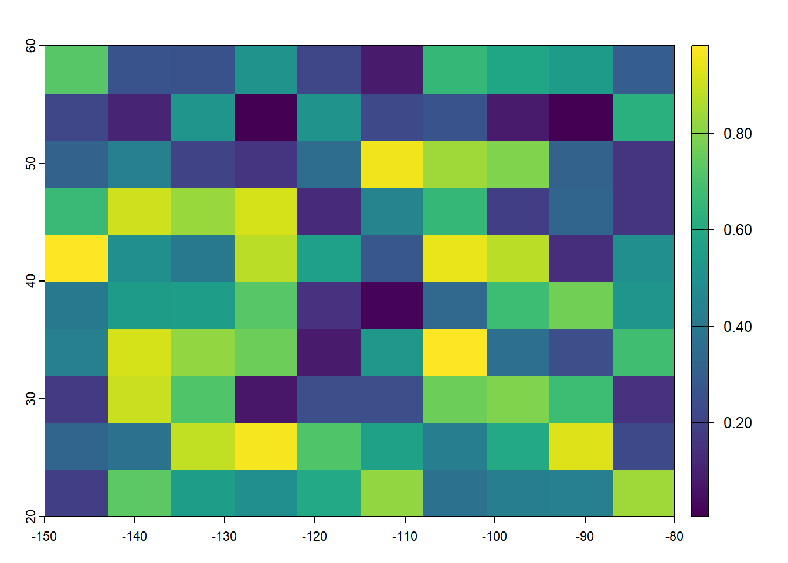
fn_Rast_Test = "C:\\Lei\\HS_Web\\data_share/raster_Py.tif"
# Create a new raster with the specified dimensions and extent
ncol, nrow = 10, 10
xmin, xmax, ymin, ymax = -150, -80, 20, 60
# Create the empty raster with random values
with rasterio.open(
fn_Rast_Test,
"w",
driver="GTiff",
dtype=np.float32,
count=1,
width=ncol,
height=nrow,
transform=rasterio.transform.from_origin(xmin, ymax, (xmax - xmin) / ncol, (ymax - ymin) / nrow),
crs="EPSG:4326"
) as dst:
# Generate random values and assign them to the raster
random_values = np.random.rand(nrow, ncol).astype(np.float32)
dst.write(random_values, 1) # Write the values to band 1
# Now you have an empty raster with random values, and you can read and manipulate it as needed
with rasterio.open(fn_Rast_Test) as src:
rast_Test = src.read(1)
rast_plot(rast_Test)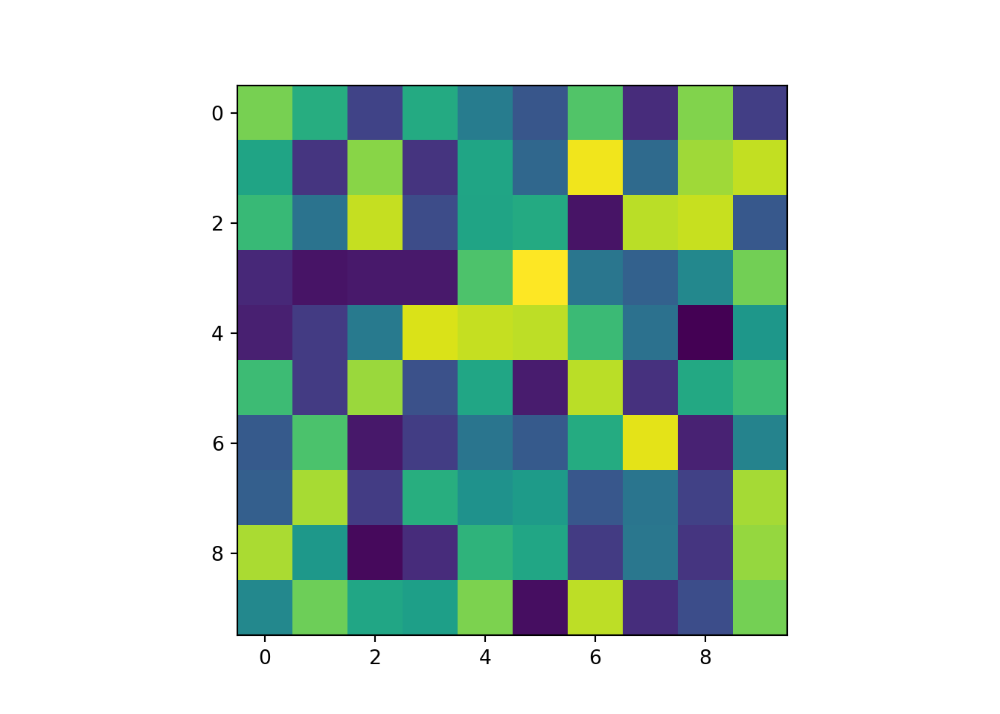
Certainly, you can directly create a data file like an ASC (ASCII) file for raster data.
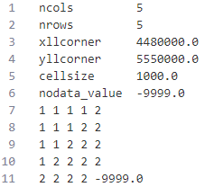
3 Read and write
Reading and writing data are fundamental processes that precede spatial data manipulation. Spatial data is typically acquired from external sources.
The test files are available in Github
However, due to the substantial differences between raster and vector data structures, they are often handled separately.
| Data Type | Read | Write |
|---|---|---|
| Vector | vect() |
writeVect() |
| Raster | rast() |
writeRast() |
# Read shp-file as a vector layer
vect_Test <- vect("https://raw.githubusercontent.com/HydroSimul/Web/main/data_share/minibeispiel_polygon.geojson")
# Read raster file
rast_Test <- rast("https://raw.githubusercontent.com/HydroSimul/Web/main/data_share/minibeispiel_raster.asc")
# Info and Plot of vector layer
vect_Test class : SpatVector
geometry : polygons
dimensions : 2, 3 (geometries, attributes)
extent : 4480500, 4484666, 5550100, 5554933 (xmin, xmax, ymin, ymax)
source : minibeispiel_polygon.geojson
coord. ref. : DHDN / 3-degree Gauss-Kruger zone 4 (EPSG:31468)
names : ID_region Name region_area
type : <int> <chr> <num>
values : 1 a 8.853e+06
2 b 2.208e+06plot(vect_Test)
# Info and Plot of raster layer
rast_Testclass : SpatRaster
size : 5, 5, 1 (nrow, ncol, nlyr)
resolution : 1000, 1000 (x, y)
extent : 4480000, 4485000, 5550000, 5555000 (xmin, xmax, ymin, ymax)
coord. ref. :
source : minibeispiel_raster.asc
name : minibeispiel_raster plot(rast_Test)
Export:
fn_Vect_Out = "fn_Output_Vector.geojson"
writeVector(vect_Test, fn_Vect_Out, "GeoJSON")
fn_Rast_Out = "fn_OutPut_Raster.tif"
writeRaster(rast_Test, fn_Rast_Out)| Data Type | Read | Write |
|---|---|---|
| Vector | geopandas.read_file() |
geopandas.to_file() |
| Raster | rastio.open('r') |
rastio.open('w') |
# Read GeoJSON file as a vector layer
vect_Test = gpd.read_file("https://raw.githubusercontent.com/HydroSimul/Web/main/data_share/minibeispiel_polygon.geojson")
# Read raster file
rast_Test = rasterio.open("https://raw.githubusercontent.com/HydroSimul/Web/main/data_share/minibeispiel_raster.asc")
# Info and Plot of the vector layer
print(vect_Test) ID_region ... geometry
0 1 ... MULTIPOLYGON (((4484566 5554566, 4483922 55540...
1 2 ... MULTIPOLYGON (((4481929 5554933, 4481222 55506...
[2 rows x 4 columns]vect_Test.plot()
plt.show()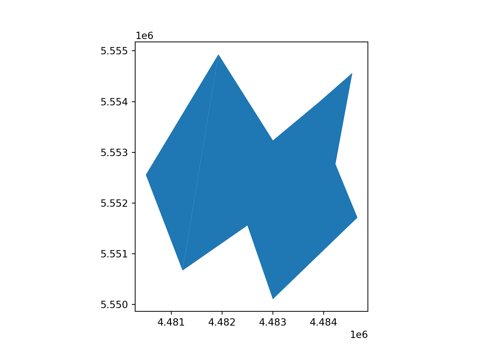
plt.close()
# Info and Plot of the raster layer
print(rast_Test.profile){'driver': 'AAIGrid', 'dtype': 'float32', 'nodata': -9999.0, 'width': 5, 'height': 5, 'count': 1, 'crs': CRS.from_wkt('GEOGCS["WGS 84",DATUM["WGS_1984",SPHEROID["WGS 84",6378137,298.257223563,AUTHORITY["EPSG","7030"]],AUTHORITY["EPSG","6326"]],PRIMEM["Greenwich",0],UNIT["Degree",0.0174532925199433],AXIS["Longitude",EAST],AXIS["Latitude",NORTH]]'), 'transform': Affine(1000.0, 0.0, 4480000.0,
0.0, -1000.0, 5555000.0), 'blockxsize': 5, 'blockysize': 1, 'tiled': False}rast_plot(rast_Test)
Export:
fn_Vect_Out = "fn_Output_Vector.geojson"
vect_Test.to_file(fn_Vect_Out, driver="GeoJSON")
# Write the raster to a GeoTIFF file
fn_Rast_Out = "fn_OutPut_Raster.tif"
with rasterio.open(fn_Rast_Out, 'w', driver='GTiff', dtype=rast_Test.dtype, count=1, width=rast_Test.shape[1], height=rast_Test.shape[0], transform=rast_Test.transform, crs=rast_Test.crs) as dst:
dst.write(rast_Test, 1)4 Coordinate Reference Systems
4.1 Assigning a CRS
In cases where the Coordinate Reference System (CRS) information is not included in the data file’s content, you can assign it manually using the crs() function. This situation often occurs when working with raster data in formats like ASC (Arc/Info ASCII Grid) or other file formats that may not store CRS information.
crs(rast_Test) <- "EPSG:31468"
rast_Testclass : SpatRaster
size : 5, 5, 1 (nrow, ncol, nlyr)
resolution : 1000, 1000 (x, y)
extent : 4480000, 4485000, 5550000, 5555000 (xmin, xmax, ymin, ymax)
coord. ref. : DHDN / 3-degree Gauss-Kruger zone 4 (EPSG:31468)
source : minibeispiel_raster.asc
name : minibeispiel_raster As the results showed, the CRS information has been filled with the necessary details in line coord. ref..
rast_Test = rasterio.open("https://raw.githubusercontent.com/HydroSimul/Web/main/data_share/minibeispiel_raster.asc", 'r+')
rast_Test.crs = CRS.from_epsg(31468)
print(rast_Test.crs)EPSG:31468The use of EPSG (European Petroleum Survey Group) codes is highly recommended for defining Coordinate Reference Systems (CRS) in spatial data. You can obtain information about EPSG codes from the EPSG website.
NOTE
You should not use this approach to change the CRS of a data set from what it is to what you want it to be. Assigning a CRS is like labeling something.
4.2 Transforming vector data
The transformation of vector data is relatively simple, as it involves applying a mathematical formula to the coordinates of each point to obtain their new coordinates. This transformation can be considered as without loss of precision.
The project() function can be utilized to reproject both vector and raster data.
# New CRS
crs_New <- "EPSG:4326"
# Reproject
vect_Test_New <- project(vect_Test, crs_New)
# Info of vector layer
vect_Test_New class : SpatVector
geometry : polygons
dimensions : 2, 3 (geometries, attributes)
extent : 11.72592, 11.78419, 50.08692, 50.13034 (xmin, xmax, ymin, ymax)
coord. ref. : lon/lat WGS 84 (EPSG:4326)
names : ID_region Name region_area
type : <int> <chr> <num>
values : 1 a 8.853e+06
2 b 2.208e+06geopands.to_crs()
# New CRS
crs_New = "EPSG:4326"
# Reproject the vector layer to the new CRS
vect_Test_New = vect_Test.to_crs(crs=crs_New)
# Info of vector layer
print(vect_Test_New) ID_region ... geometry
0 1 ... MULTIPOLYGON (((11.78268 50.12711, 11.7737 50....
1 2 ... MULTIPOLYGON (((11.74578 50.13033, 11.73611 50...
[2 rows x 4 columns]4.3 Transforming raster data
Vector data can be transformed from lon/lat coordinates to planar and back without loss of precision. This is not the case with raster data. A raster consists of rectangular cells of the same size (in terms of the units of the CRS; their actual size may vary). It is not possible to transform cell by cell. For each new cell, values need to be estimated based on the values in the overlapping old cells. If the values are categorical data, the “nearest neighbor” method is commonly used. Otherwise some sort of interpolation is employed (e.g. “bilinear”). (From Spatial Data Science)
Note
Because projection of rasters affects the cell values, in most cases you will want to avoid projecting raster data and rather project vector data.
4.3.1 With CRS
The simplest approach is to provide a new CRS:
project()
# New CRS
crs_New <- "EPSG:4326"
# Reproject
rast_Test_New <- project(rast_Test, crs_New, method = 'near')
# Info and Plot of vector layer
rast_Test_Newclass : SpatRaster
size : 4, 6, 1 (nrow, ncol, nlyr)
resolution : 0.01176853, 0.01176853 (x, y)
extent : 11.7188, 11.78941, 50.08395, 50.13102 (xmin, xmax, ymin, ymax)
coord. ref. : lon/lat WGS 84 (EPSG:4326)
source(s) : memory
name : minibeispiel_raster
min value : 1
max value : 3 plot(rast_Test)
plot(rast_Test_New)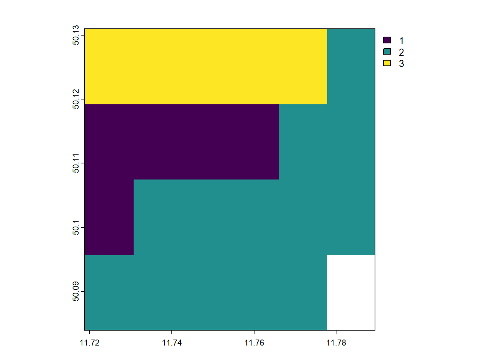
fn_Rast_New = 'C:\\Lei\\HS_Web\\data_share/minibeispiel_raster.tif'
# Define the new CRS
new_crs = {'init': 'EPSG:4326'}
transform, width, height = calculate_default_transform(
rast_Test.crs, new_crs, rast_Test.width, rast_Test.height, *rast_Test.bounds)
kwargs = rast_Test.meta.copy()
kwargs.update({
'crs': new_crs,
'transform': transform,
'width': width,
'height': height
})
rast_Test_New = rasterio.open(fn_Rast_New, 'w', **kwargs)
reproject(
source=rasterio.band(rast_Test, 1),
destination=rasterio.band(rast_Test_New, 1),
#src_transform=rast_Test.transform,
src_crs=rast_Test.crs,
#dst_transform=transform,
dst_crs=new_crs,
resampling=Resampling.nearest)(None, None)rast_Test_New.close()
rast_Test = rasterio.open("https://raw.githubusercontent.com/HydroSimul/Web/main/data_share/minibeispiel_raster.asc")
rast_plot(rast_Test)
rast_Test_New = rasterio.open(fn_Rast_New)
rast_plot(rast_Test_New)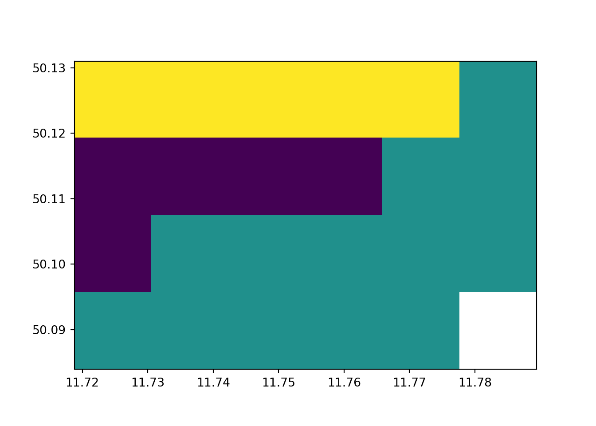
4.3.2 With Mask Raster
A second way is provide an existing SpatRaster with the geometry you desire, with special boundary and resolution, this is a better way.
# New CRS
rast_Mask <- rast(ncol=10, nrow=10, xmin=265000, xmax=270000, ymin=5553000, ymax=5558000)
crs(rast_Mask) <- "EPSG:25833"
values(rast_Mask) <- 1
# Reproject
rast_Test_New <- project(rast_Test, rast_Mask)
# Info and Plot of vector layer
rast_Test_Newclass : SpatRaster
size : 10, 10, 1 (nrow, ncol, nlyr)
resolution : 500, 500 (x, y)
extent : 265000, 270000, 5553000, 5558000 (xmin, xmax, ymin, ymax)
coord. ref. : ETRS89 / UTM zone 33N (EPSG:25833)
source(s) : memory
name : minibeispiel_raster
min value : 1
max value : 3 plot(rast_Test)
plot(rast_Test_New)
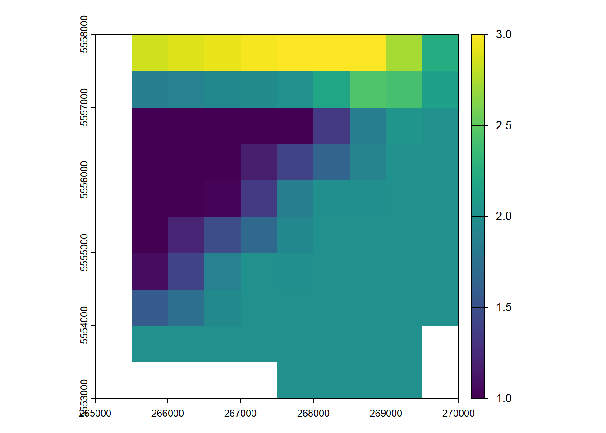
5 Vector data manipulation
In vector manipulation, it’s crucial to handle both attributes and shapes, especially when combining multiple shapes or layers with other shapes and addressing overlapping layers.
5.1 Attributes manipulation
5.1.1 Extract all Attributes
as.data.frame()
df_Attr <- as.data.frame(vect_Test)
df_Attr ID_region Name region_area
1 1 a 8853404
2 2 b 22081095.1.2 Extract one with attribute name
$name[, "name"]
vect_Test$ID_region[1] 1 2vect_Test[,"ID_region"] class : SpatVector
geometry : polygons
dimensions : 2, 1 (geometries, attributes)
extent : 4480500, 4484666, 5550100, 5554933 (xmin, xmax, ymin, ymax)
source : minibeispiel_polygon.geojson
coord. ref. : DHDN / 3-degree Gauss-Kruger zone 4 (EPSG:31468)
names : ID_region
type : <int>
values : 1
25.1.3 Add a new attribute
$name <-[, "name"] <-
vect_Test$New_Attr <- c("n1", "n2")
vect_Test[,"New_Attr"] <- c("n1", "n2")5.1.4 Merge several attributes
- same order
cbind()
- common (key-)attributes
merge()
df_New_Attr <- data.frame(Name = c("a", "b"), new_Attr2 = c(9, 6))
cbind(vect_Test, df_New_Attr) class : SpatVector
geometry : polygons
dimensions : 2, 6 (geometries, attributes)
extent : 4480500, 4484666, 5550100, 5554933 (xmin, xmax, ymin, ymax)
source : minibeispiel_polygon.geojson
coord. ref. : DHDN / 3-degree Gauss-Kruger zone 4 (EPSG:31468)
names : ID_region Name region_area New_Attr Name new_Attr2
type : <int> <chr> <num> <chr> <chr> <num>
values : 1 a 8.853e+06 n1 a 9
2 b 2.208e+06 n2 b 6merge(vect_Test, df_New_Attr, by = "Name") class : SpatVector
geometry : polygons
dimensions : 2, 5 (geometries, attributes)
extent : 4480500, 4484666, 5550100, 5554933 (xmin, xmax, ymin, ymax)
coord. ref. : DHDN / 3-degree Gauss-Kruger zone 4 (EPSG:31468)
names : Name ID_region region_area New_Attr new_Attr2
type : <chr> <int> <num> <chr> <num>
values : a 1 8.853e+06 n1 9
b 2 2.208e+06 n2 65.1.5 Delete a attribute
$name <- NULL
vect_Test$New_Attr <- c("n1", "n2")
vect_Test[,"New_Attr"] <- c("n1", "n2")5.2 Object Append and aggregate
5.2.1 Append new Objects
rbind()
# New Vect
# Define the coordinate reference system (CRS) with EPSG codes
crs_31468 <- "EPSG:31468"
# Define coordinates for the first polygon
x_polygon_3 <- c(4480400, 4481222, 4480500)
y_polygon_3 <- c(5551000, 5550666, 5552555)
geometry_polygon_3 <- cbind(id=3, part=1, x_polygon_3, y_polygon_3)
# Create a vector layer for the polygons, specifying their type, attributes, CRS, and additional attributes
vect_New <- vect(geometry_polygon_3, type="polygons", atts = data.frame(ID_region = 3, Name = c("b")), crs = crs_31468)
vect_New$region_area <- expanse(vect_New)
# Append the objects
vect_Append <- rbind(vect_Test, vect_New)
vect_Append class : SpatVector
geometry : polygons
dimensions : 3, 4 (geometries, attributes)
extent : 4480400, 4484666, 5550100, 5554933 (xmin, xmax, ymin, ymax)
source : minibeispiel_polygon.geojson
coord. ref. : DHDN / 3-degree Gauss-Kruger zone 4 (EPSG:31468)
names : ID_region Name region_area New_Attr
type : <int> <chr> <num> <chr>
values : 1 a 8.853e+06 n1
2 b 2.208e+06 n2
3 b 6.558e+05 NApandas.concat()
# Define the coordinate reference system (CRS) with EPSG code
crs_31468 = "EPSG:31468"
# Define coordinates for the new polygon
x_polygon_3 = [4480400, 4481222, 4480500]
y_polygon_3 = [5551000, 5550666, 5552555]
# Create a Polygon geometry
geometry_polygon_3 = Polygon(zip(x_polygon_3, y_polygon_3))
# Create a GeoDataFrame for the new polygon
vect_New = gpd.GeoDataFrame({'ID_region': [3], 'Name': ['b'], 'geometry': [geometry_polygon_3]}, crs=crs_31468)
# Calculate the region area
vect_New['region_area'] = vect_New['geometry'].area
# Append the new GeoDataFrame to the existing one
vect_Append = gpd.GeoDataFrame(pd.concat([vect_Test, vect_New], ignore_index=True), crs=crs_31468)
# Now, vect_Append contains the combined data
print(vect_Append) ID_region ... geometry
0 1 ... MULTIPOLYGON (((4484566 5554566, 4483922 55540...
1 2 ... MULTIPOLYGON (((4481929 5554933, 4481222 55506...
2 3 ... POLYGON ((4480400 5551000, 4481222 5550666, 44...
[3 rows x 4 columns]5.2.2 Aggregate / Dissolve
It is common to aggregate (“dissolve”) polygons that have the same value for an attribute of interest.
aggregate()
# Aggregate by the "Name"
vect_Aggregated <- terra::aggregate(vect_Append, by = "Name")
vect_Aggregated class : SpatVector
geometry : polygons
dimensions : 2, 5 (geometries, attributes)
extent : 4480400, 4484666, 5550100, 5554933 (xmin, xmax, ymin, ymax)
coord. ref. : DHDN / 3-degree Gauss-Kruger zone 4 (EPSG:31468)
names : Name mean_ID_region mean_region_area New_Attr agg_n
type : <chr> <num> <num> <chr> <int>
values : a 1 8.853e+06 n1 1
b 2.5 1.432e+06 NA 2plot(vect_Append, "ID_region")
plot(vect_Aggregated, "Name")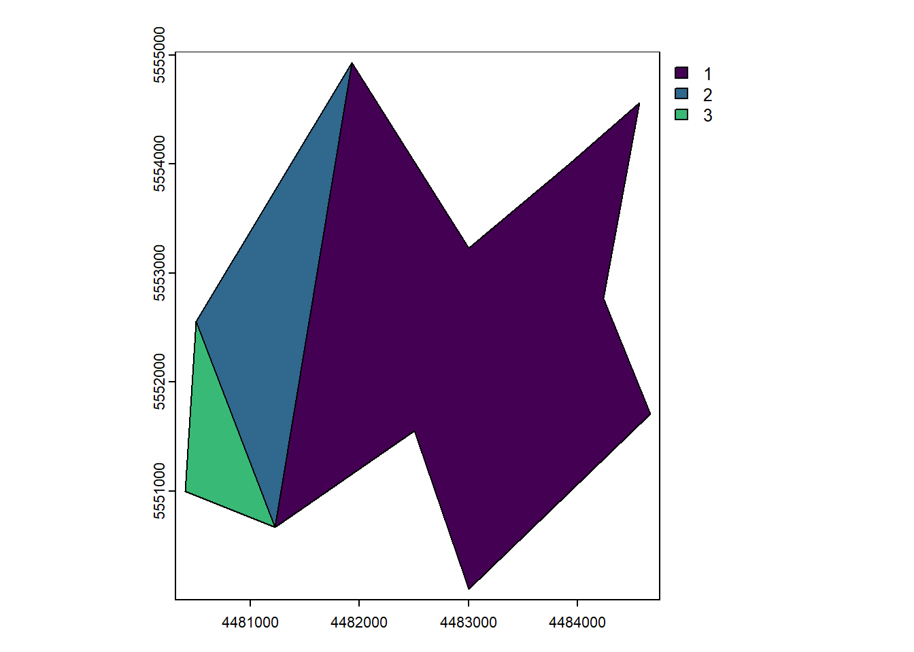
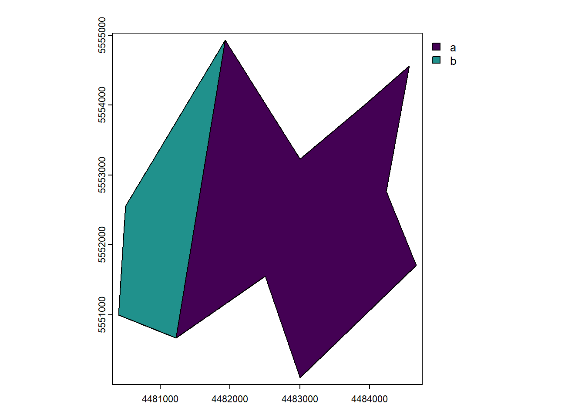
geopandas.dissolve()
# Aggregate by the "Name"
vect_Aggregated = vect_Append.dissolve(by="Name", aggfunc="first")
print(vect_Aggregated) geometry ... region_area
Name ...
a POLYGON ((4484566 5554566, 4483922 5554001, 44... ... 8.853404e+06
b POLYGON ((4480400 5551000, 4480500 5552555, 44... ... 2.208109e+06
[2 rows x 3 columns]vect_Test.plot()
plt.show()
plt.close()
vect_Aggregated.plot()
plt.show()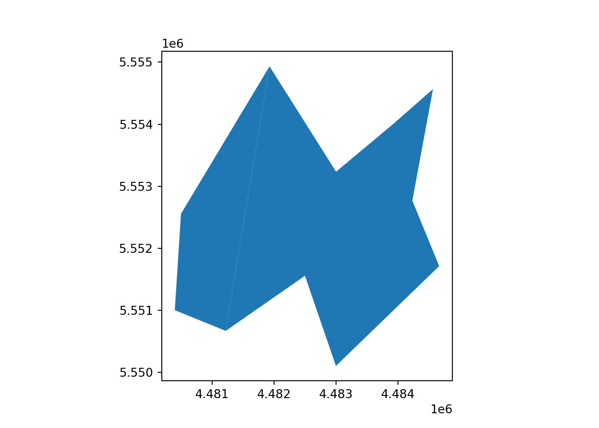
plt.close()5.3 Overlap
To perform operations that involve overlap between two vector datasets, we will create a new vector dataset:
vect_Overlap <- as.polygons(rast_Test)[1,]
names(vect_Overlap) <- "ID_Rast"
plot(vect_Overlap, "ID_Rast")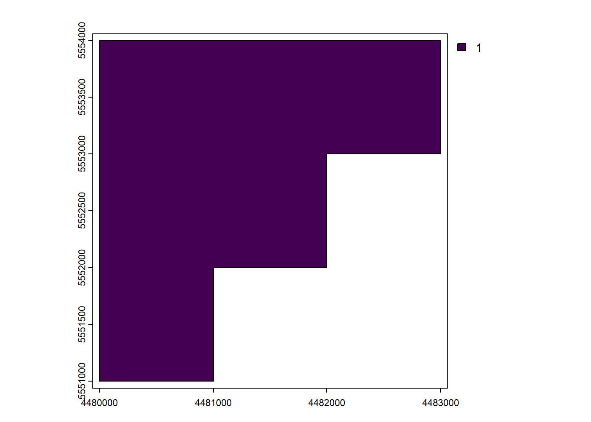
# Read the raster and get the shapes
rast_Test = rasterio.open("https://raw.githubusercontent.com/HydroSimul/Web/main/data_share/minibeispiel_raster.asc", 'r+')
rast_Test.crs = CRS.from_epsg(31468)
transform = rast_Test.transform
shapes = rasterio.features.shapes(rast_Test.read(1), transform=transform)
# Convert the shapes to a GeoDataFrame
geometries = [shape(s) for s, v in shapes if v == 1]
vect_Overlap = gpd.GeoDataFrame({'geometry': geometries})
# Add an "ID_Rast" column to the GeoDataFrame
vect_Overlap['ID_Rast'] = range(1, len(geometries) + 1)
vect_Overlap.crs ="EPSG:31468"
# Plot the polygons with "ID_Rast" as the attribute
vect_Overlap.plot(column='ID_Rast')
plt.show()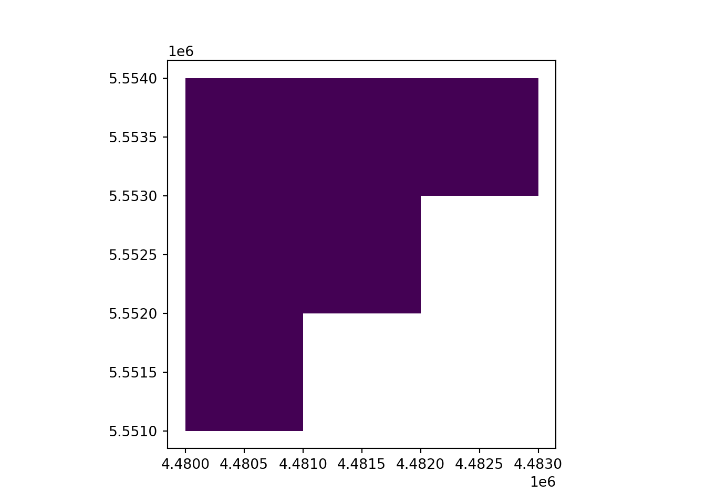
plt.close()5.3.1 Erase
erase()
vect_Erase <- erase(vect_Test, vect_Overlap)
plot(vect_Erase, "ID_region")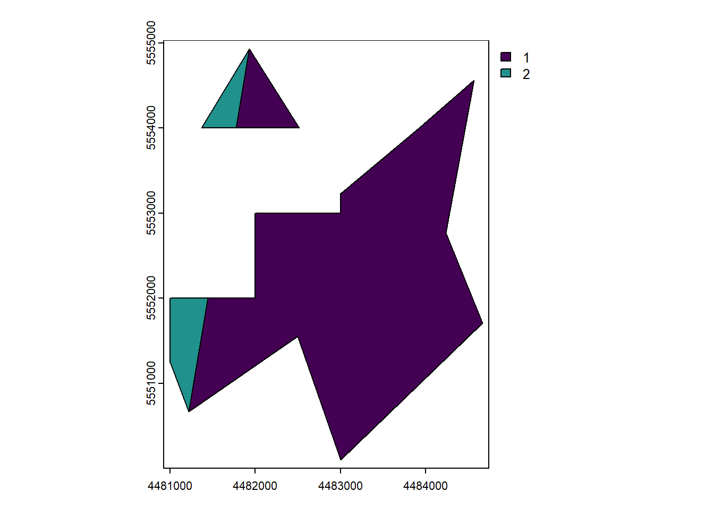
geopandas.overlay(how='difference')
vect_Erase = gpd.overlay(vect_Test, vect_Overlap, how='difference')
vect_Erase.plot(column='ID_region', cmap='jet')
plt.show()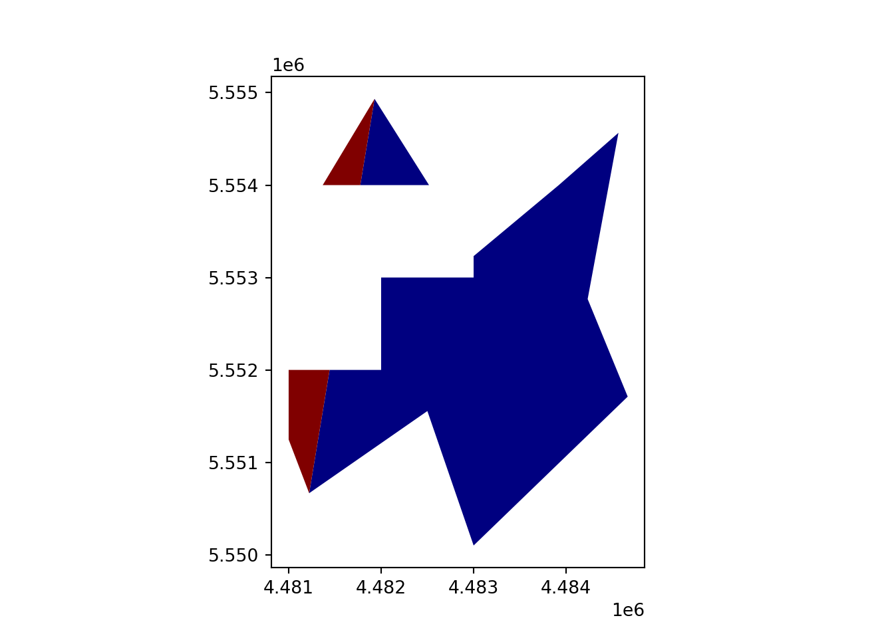
plt.close()5.3.2 Intersect
intersect()
vect_Intersect <- terra::intersect(vect_Test, vect_Overlap)
plot(vect_Intersect, "ID_region")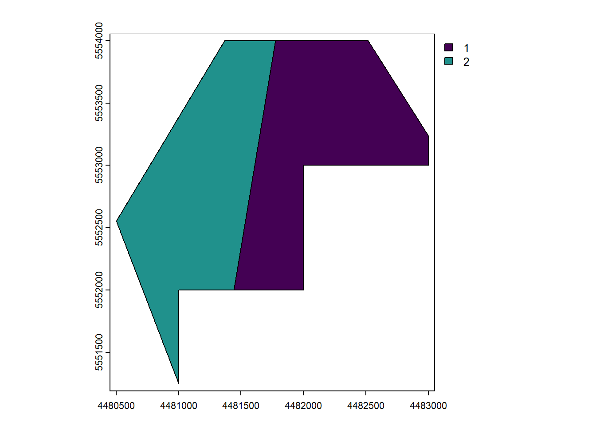
geopandas.overlay(how='intersection')
vect_Intersect = gpd.overlay(vect_Test, vect_Overlap, how='intersection')
vect_Intersect.plot(column='ID_region', cmap='jet')
plt.show()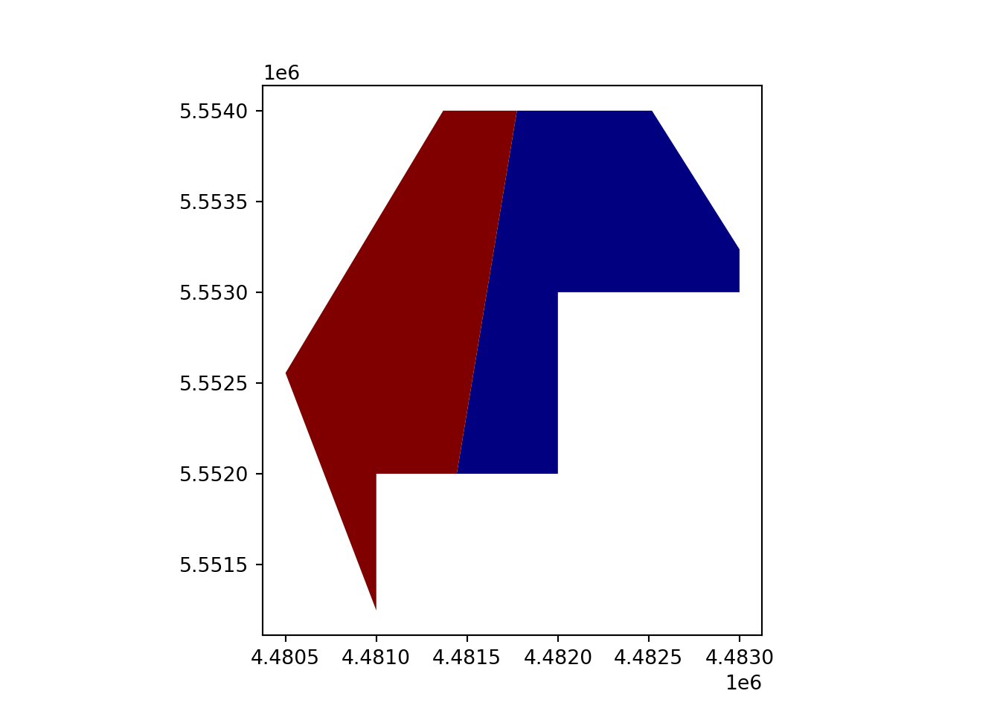
plt.close()5.3.3 Union
Appends the geometries and attributes of the input.
union()
vect_Union <- terra::union(vect_Test, vect_Overlap)
plot(vect_Union, "ID_region")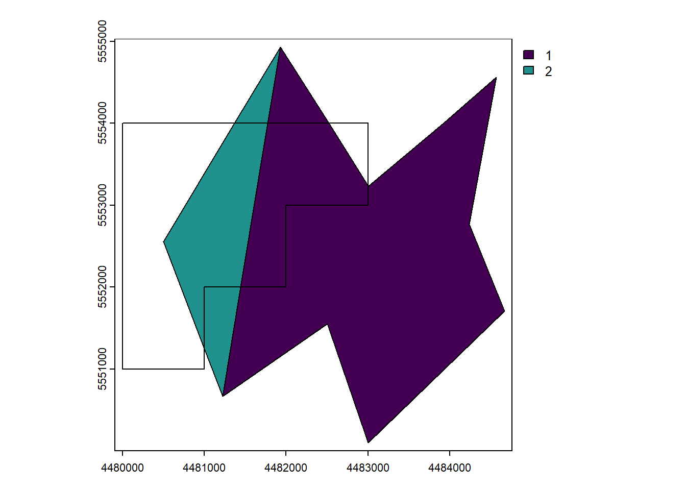
geopandas.overlay(how='union')
vect_Union = gpd.overlay(vect_Test, vect_Overlap, how='union')
vect_Union.plot(column='ID_region', cmap='jet')
plt.show()
plt.close()5.3.4 Cover
cover() is a combination of intersect() and union(). intersect returns new (intersected) geometries with the attributes of both input datasets. union appends the geometries and attributes of the input. cover returns the intersection and appends the other geometries and attributes of both datasets.
cover()
vect_Cover <- terra::cover(vect_Test, vect_Overlap)
plot(vect_Cover, "ID_region")
geopandas.overlay(how='identity')
vect_Cover = gpd.overlay(vect_Test, vect_Overlap, how='identity')
vect_Cover.plot(column='ID_region', cmap='jet')
plt.show()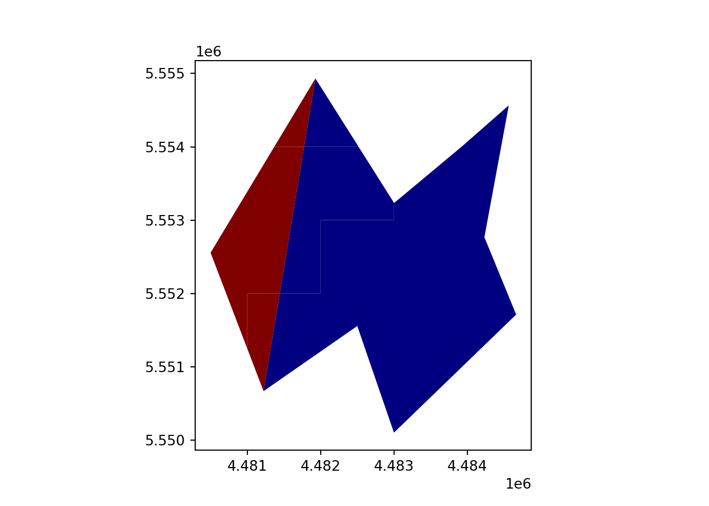
plt.close()5.3.5 Difference
symdif()
vect_Difference <- terra::symdif(vect_Test, vect_Overlap)
plot(vect_Difference, "ID_region")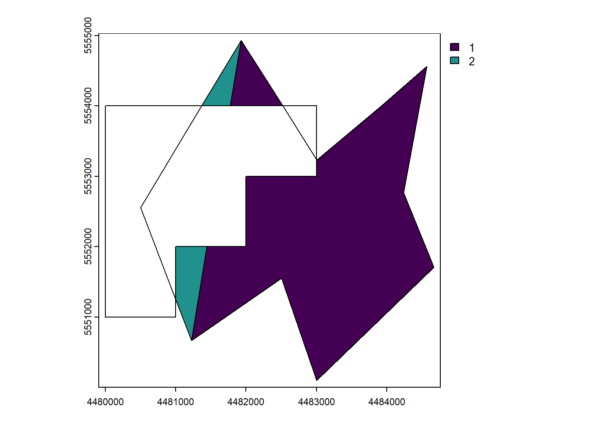
geopandas.overlay(how='symmetric_difference')
vect_Difference = gpd.overlay(vect_Test, vect_Overlap, how='symmetric_difference')
vect_Difference.plot(column='ID_region', cmap='jet')
plt.show()
plt.close()6 Raster data manipulation
Compared to vector data, raster data stores continuous numeric values more, leading to significant differences in manipulation and analysis approaches.
Data preparation for Python:
rast_Test = rasterio.open("https://raw.githubusercontent.com/HydroSimul/Web/main/data_share/minibeispiel_raster.asc", 'r+')
rast_Test.crs = CRS.from_epsg(31468)
rast_Test_data = rast_Test.read(1)
rast_Test_data[rast_Test_data == -9999] = np.nan6.1 Raster algebra
Many generic functions that allow for simple and elegant raster algebra have been implemented for Raster objects, including the normal algebraic operators such as +, -, *, /, logical operators such as >, >=, <, ==, !, and functions like abs, round, ceiling, floor, trunc, sqrt, log, log10, exp, cos, sin, atan, tan, max, min, range, prod, sum, any, all. In these functions, you can mix raster objects with numbers, as long as the first argument is a raster object. (Spatial Data Science)
rast_Add <- rast_Test + 10
plot(rast_Add)rast_Add = rast_Test_data + 10
rast_plot(rast_Add)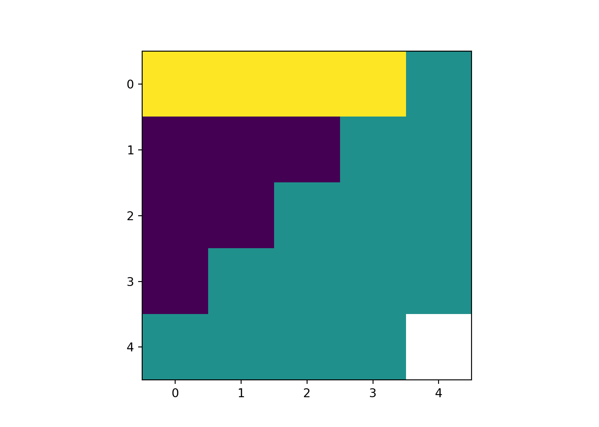
6.2 Replace with Condition
rast[condition] <-
# Copy to a new raster
rast_Replace <- rast_Test
# Replace
rast_Replace[rast_Replace > 1] <- 10
plot(rast_Replace)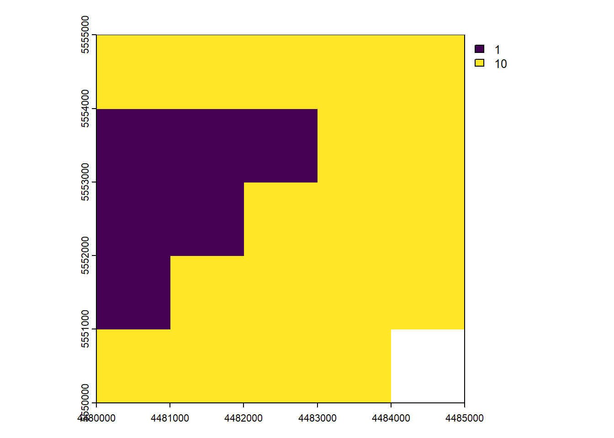
rast[condition] =
rast_Replace = rast_Test_data
# Replace values greater than 1 with 10
rast_Replace[rast_Replace > 1] = 10
rast_plot(rast_Replace)6.3 Summary of multi-layers
rast_Mean <- mean(rast_Test, rast_Replace)
plot(rast_Mean)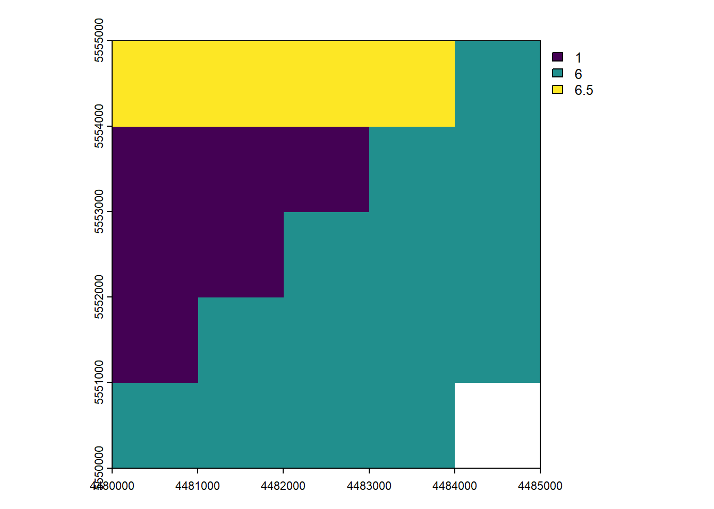
rast_Mean = (rast_Test_data + rast_Replace) / 2
rast_plot(rast_Mean)
6.4 Aggregate and disaggregate
aggregate()disagg()
# Aggregate by factor 2
rast_Aggregate <- aggregate(rast_Test, 2)
plot(rast_Aggregate)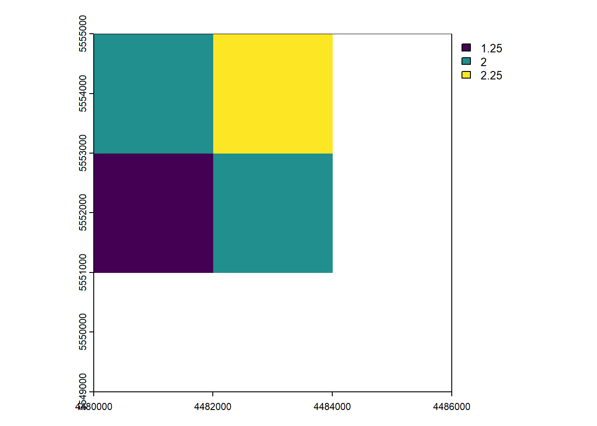
# Disaggregate by factor 2
rast_Disagg <- disagg(rast_Test, 2)
rast_Disaggclass : SpatRaster
size : 10, 10, 1 (nrow, ncol, nlyr)
resolution : 500, 500 (x, y)
extent : 4480000, 4485000, 5550000, 5555000 (xmin, xmax, ymin, ymax)
coord. ref. : DHDN / 3-degree Gauss-Kruger zone 4 (EPSG:31468)
source(s) : memory
varname : minibeispiel_raster
name : minibeispiel_raster
min value : 1
max value : 3 plot(rast_Disagg)
# Aggregate by factor 2
rast_Aggregate = rast_Test_data
rast_Aggregate = rast_Aggregate[::2, ::2]
rast_plot(rast_Aggregate)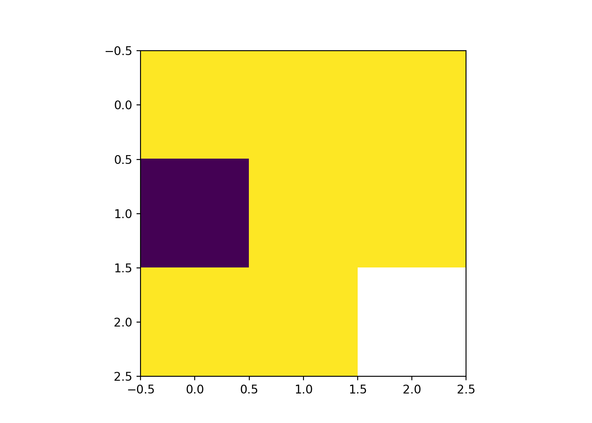
# Disaggregate by factor 2
rast_Disagg = rast_Test_data
rast_Disagg = np.repeat(np.repeat(rast_Disagg, 2, axis=0), 2, axis=1)
rast_plot(rast_Disagg)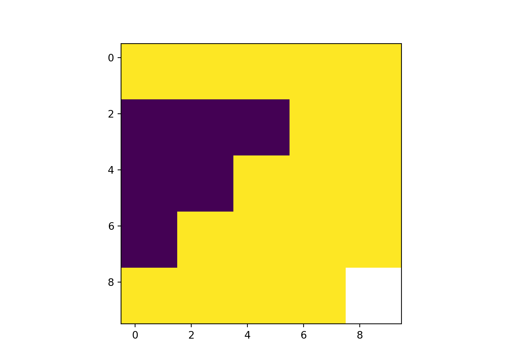
6.5 Crop
The crop function lets you take a geographic subset of a larger raster object with an extent. But you can also use other spatial object, in them an extent can be extracted.
crop()- with extention
- with rster
- with vector
rast_Crop <- crop(rast_Test, vect_Test[1,])
plot(rast_Crop)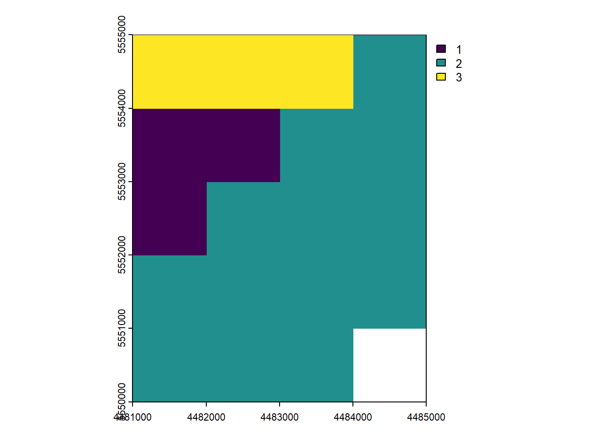
6.6 Trim
trim()
Trim (shrink) a SpatRaster by removing outer rows and columns that are NA or another value.
rast_Trim0 <- rast_Test
rast_Trim0[21:25] <- NA
rast_Trim <- trim(rast_Trim0)plot(rast_Trim0)
plot(rast_Trim)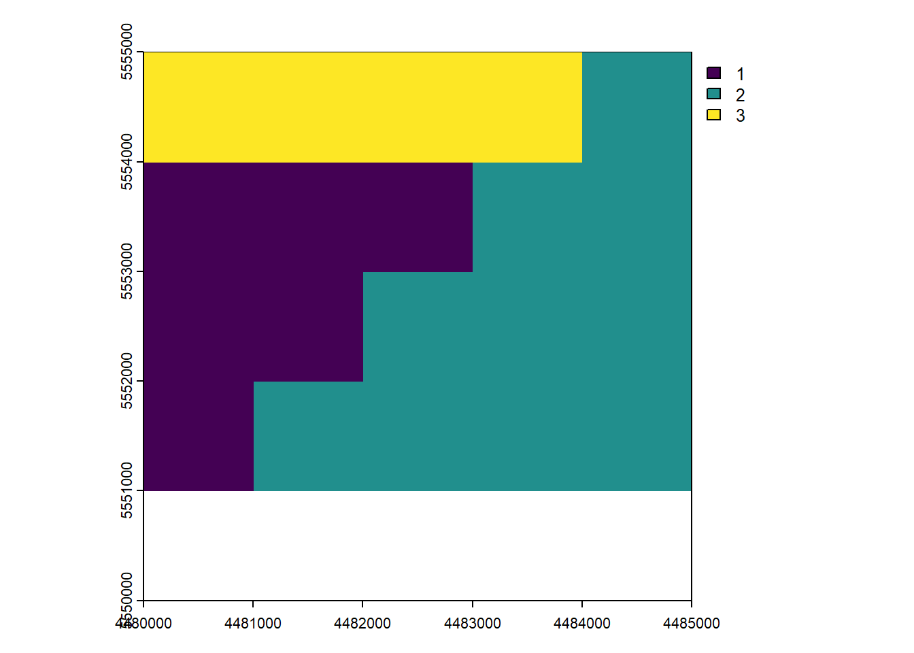
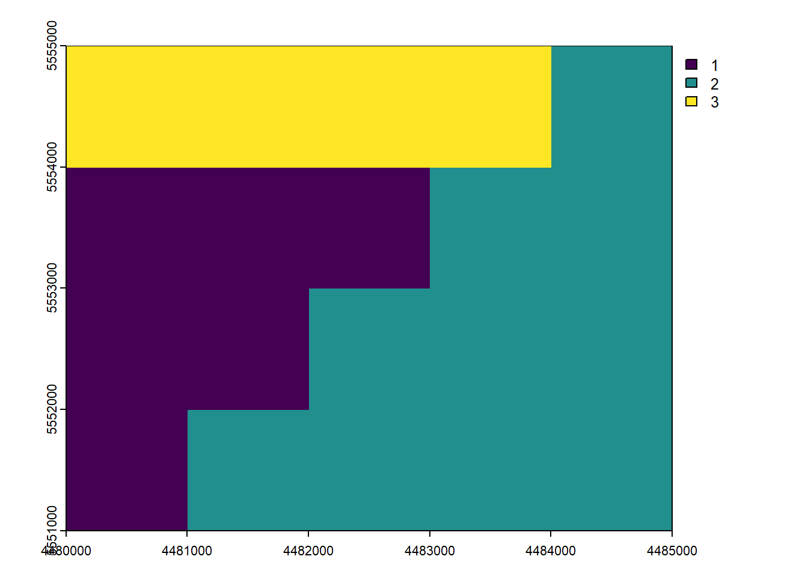
6.7 Mask
mask()crop(mask = TRUE)=mask()+trim()
When you use mask manipulation in spatial data analysis, it involves setting the cells that are not covered by a mask to NA (Not Available) values. If you apply the crop(mask = TRUE) operation, it means that not only will the cells outside of the mask be set to NA, but the resulting raster will also be cropped to match the extent of the mask.
rast_Mask <- mask(rast_Disagg, vect_Test[1,])
rast_CropMask <- crop(rast_Disagg, vect_Test[1,], mask = TRUE)plot(rast_Mask)
plot(rast_CropMask)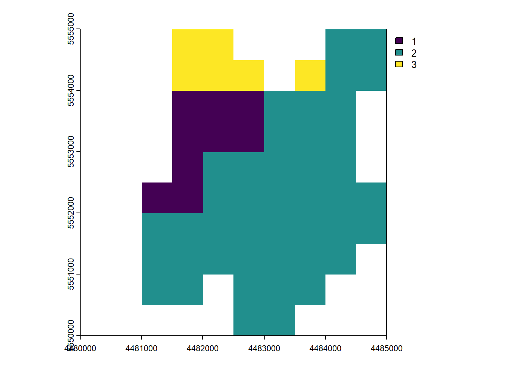
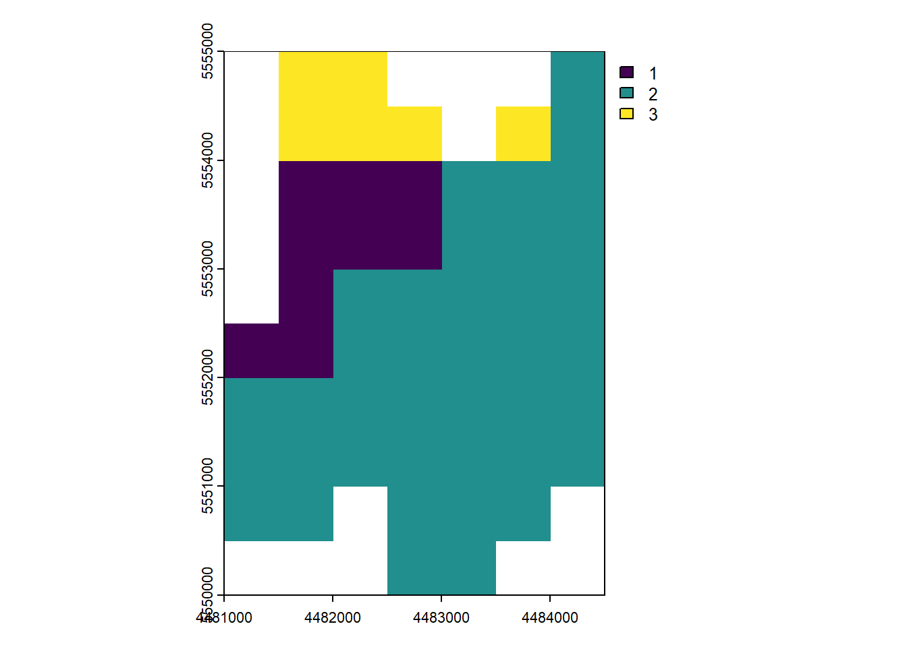
vect_Mask = vect_Test.iloc[0:1].geometry.values[0]
# Create a mask for the vect_Mask on the raster
rast_Mask = rasterio.features.geometry_mask([vect_Mask], out_shape=rast_Test.shape, transform=rast_Test.transform, invert=True)
# Apply the mask to the raster
rast_Crop = rast_Test_data.copy()
rast_Crop[~rast_Mask] = rast_Test.nodata # Set values outside the geometry to nodata
rast_plot(rast_Crop)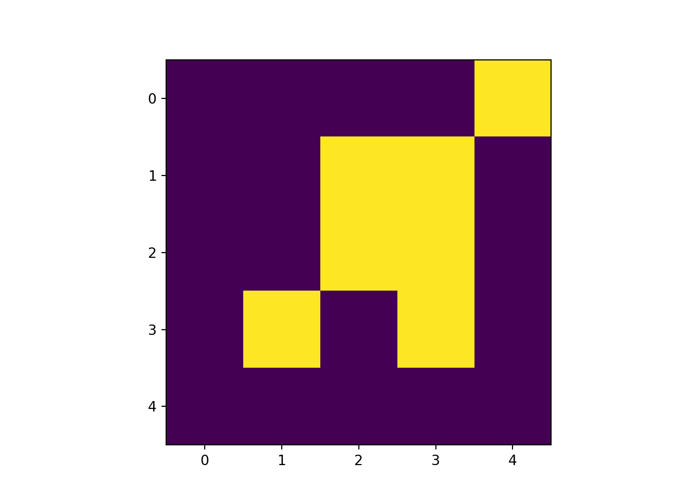